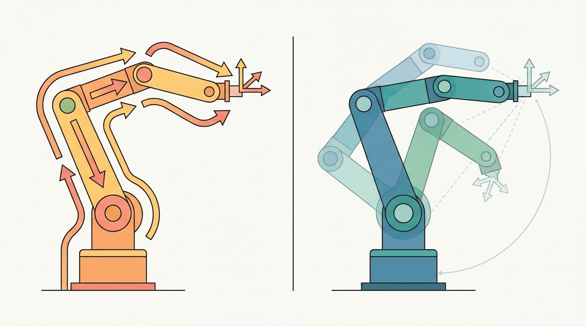

Section 5.6: Inverse kinematics: analytic, numerical (Jacobian), and learned
"The arm can reach the cup from the left or the right, over or under. Inverse kinematics must choose, and the choice is never free."
A Grasp Planner With Too Many Solutions

Figure 5.6A: One arm, one target, three solver families. Analytic IK reads the joint angles off closed-form geometry, the Jacobian solver walks to them iteratively, and a learned model predicts them in one pass; the same reach exposes where each approach is fast and where each can silently break.
This section assumes familiarity with forward kinematics and the planar two-link arm introduced in section 5.5, and with the tool-pose representation from section 5.4. The Jacobian update used here is derived in detail in section 5.7, and task-space constraints that extend the numerical solver are covered in section 5.8. The inverse kinematics (IK) techniques introduced here recur in Part IV when motion planners query the solver to validate candidate configurations during grasp and trajectory planning.
Big Picture
A surgical robot must place its tip at an exact point in 3D space, right now, while the patient breathes. You know where the tip must go; the question is which joint angles get it there. That is the inverse kinematics problem, and it is the gateway between high-level intent and physical motion for every embodied AI system. Analytic solvers give microsecond closed-form answers but shatter on redundant or underspecified arms. Jacobian-based numerical methods generalize gracefully but slow down near singularities. Learned models skip the geometry entirely but can violate joint limits silently. Here you will derive all three approaches, understand when each breaks, and implement a damped Jacobian solver you can trust on real hardware.
Point at a coffee cup and your shoulder, elbow, and wrist settle into the right angles before you have finished the thought; ask a robot arm to do the same and you have to solve, explicitly and in under a millisecond, for joint angles that no equation hands you directly. That backward jump, from a point in space to the joint angles that reach it, is the inverse kinematics problem, and this section develops it through three solver families: closed-form analytic geometry, an iterative Jacobian update, and a learned predictor. The Jacobian update repeatedly nudges a guessed joint vector toward the target using the Jacobian, a matrix of partial derivatives describing how a small joint change moves the end-effector; it is defined precisely, with the full update rule, later in this section and derived in depth in section 5.7. Figure 5.6A sketches the same arm reaching one target through all three.
Inverse kinematics turns on four practical questions: what must the agent know, what can it observe, what action is available, and what evidence shows that the action worked under the stated conditions?
Action Is The Test
A representation earns its place when it changes the measurable action interface. In Inverse kinematics: analytic, numerical (Jacobian), and learned, the reader should keep asking which decision becomes easier, safer, or more reliable.
Theory
For Inverse kinematics: analytic, numerical (Jacobian), and learned, the practical design rule is to make the interface inspectable before optimization begins: inputs, outputs, units, latency, bounds, and failure labels should all be visible in the saved artifact.
Inverse kinematics asks the harder direction: given a desired tool pose, which joint vector should produce it? The answer may be unique, absent, or one of many valid configurations. That is why every inverse-kinematics result must report the target frame, seed (the starting joint vector the iterative solver refines from), residual (the leftover distance between the pose the solver reached and the pose it was asked for), joint-limit margin, and whether the solver proved feasibility or merely stopped improving. A solver that returns a joint vector without reporting its residual has not solved the problem: it has just stopped working on it.
A solved joint vector is only trustworthy when it arrives with its residual, joint-limit margin, and an explicit feasible-or-not label.
Analytic IK uses closed-form geometry when the arm structure permits it. Numerical IK iteratively reduces pose error with a Jacobian update. Learned IK uses data to predict candidate joint values, but still needs forward-kinematics and constraint checks because a confident prediction is not a feasible one, and a neural network will never tell you it went past a joint limit.
Choosing Among the Three Approaches
Before reading the list below, guess: if you pick the wrong IK method for your arm and your control loop runs at 1 kHz, how many milliseconds do you have before the controller misses its real-time deadline and triggers an emergency stop?
The three approaches occupy different points in a speed-accuracy-generality trade-off:
Analytic IK is fastest and most reliable for arms with a specific structure, typically six-degrees-of-freedom (DOF) arms with a spherical wrist such as the UR5 or KUKA iiwa. The wrist center decouples position from orientation, and each configuration branch has a closed-form expression. This decoupling matters in embodied AI because any solver that cannot separate position from orientation must search a coupled six-dimensional space at every control tick. On a 1 kHz real-time loop there is no time for that search. A spherical wrist (three revolute joints whose axes intersect at one point) makes position and orientation independently solvable: the first three joints place the wrist center, and the last three joints rotate the tool without moving that center. Given a desired end-effector pose, the solver first computes the wrist center position by subtracting the tool-offset vector along the approach axis. It then solves the shoulder-elbow-wrist triangle with the law of cosines, yielding at most two elbow branches (elbow-up, elbow-down). Finally it reads the wrist Euler angles from the remaining rotation matrix by inspection.
Checkpoint
So far: analytic IK works only when the arm's structure (typically a spherical wrist) lets position and orientation be solved as two separate, closed-form steps, first the wrist center and elbow triangle, then the wrist orientation; the next two solver families exist for arms or constraints where that decoupling is not available.
Numerical IK generalizes to arbitrary kinematic structures and task-space constraints, but can converge to the wrong branch depending on the seed, slow down near singularities, or fail to converge at all when the target is just inside the workspace boundary.
Learned IK (IKFlow, IKNet, diffusion-based samplers) is fast at inference and can propose diverse solutions for redundant arms (arms with more joints than the minimum needed to reach an arbitrary pose, so many joint vectors reach the same target), but requires training data that covers the relevant workspace and cannot enforce hard joint limits without a post-hoc feasibility check.
Concretely, a learned IK model is trained on pairs of (target pose, joint vector) generated by sampling joint configurations and running them through forward kinematics; the network then learns the reverse map, from pose back to joints, directly from that dataset rather than from the arm's geometry. IKNet-style models regress a single joint vector per pose. IKFlow and diffusion-based samplers instead learn a distribution over joint vectors conditioned on the target pose, so a single forward pass can return several candidate branches (elbow-up, elbow-down, shoulder-flip) at once for a redundant arm. At inference the model never touches the URDF or the kinematic chain: it has memorized a statistical approximation of the inverse map from training data, which is exactly why its output must be replayed through forward kinematics and checked against joint limits before use, the same discipline the worked example below applies to the numerical solver.
The practical pattern is to use analytic IK when the structure allows it, numerical IK (damped least-squares or sequential quadratic programming) when constraints or redundancy matter, and learned IK as a seed generator for numerical refinement rather than as a standalone solver. The latency gap is striking. Analytic IK on a UR5 solves in roughly 0.01 ms. A Jacobian solver converges in 1-5 ms over 20-50 iterations. A learned network infers in about 0.3 ms but then needs a forward-kinematics verification pass that adds another 0.05 ms per candidate. To put the cost in perspective: in the time a Jacobian solver spends on a single 5 ms solve, an analytic solver running at 1 kHz has already computed 5 independent solutions, verified each one, and still has budget left over for the controller update. Choose wrong and your real-time controller misses its 1 ms deadline.
Mechanism
The mechanism in Inverse kinematics: analytic, numerical (Jacobian), and learned is the contract between representation and action. Name what enters the module, what leaves it, which assumptions make that transformation valid, and which log would reveal a bad handoff.
Worked Example
Because every one of the three approaches can return a joint vector that is confident but infeasible, the only honest test is to push the returned configuration back through forward kinematics and measure what pose it actually reaches; the example below builds exactly that check into the smallest numerical solver.
The example solves position IK for the planar two-link arm from Section 5.5 with the damped least-squares update $\Delta q=J^\top(JJ^\top+\lambda^2 I)^{-1}\Delta x$, then replays the solution through forward kinematics to confirm the reached pose. Damping keeps the step bounded when the arm stretches toward a near-singular reach.
Damped least-squares position IK for the planar two-link arm: ik_dls iterates the update $\Delta q=J^\top(JJ^\top+\lambda^2 I)^{-1}\Delta x$ with a per-step clamp, returns a convergence flag and residual, and the FK replay plus the unreachable-target check show the solver refusing to fake success at the out-of-reach point $(1.5, 0)$.
The FK replay closes the loop: a solver that returns its last iterate without checking the residual would silently pass the unreachable target. Reporting convergence flag, residual, and an FK replay together is what separates a usable IK result from a stopped optimizer.
Step-Through: damped least-squares IK on the planar two-link arm
Trace the solver above with $l_1=0.5$, $l_2=0.4$, target $x^\star=(0.6, 0.3)$, seed $q_0=(10^\circ, 10^\circ)=(0.1745, 0.1745)$ rad, and $\lambda=0.05$.
Iteration 0. $\text{fk}(q_0)=(0.5\cos 0.1745 + 0.4\cos 0.3491,\ 0.5\sin 0.1745 + 0.4\sin 0.3491)=(0.8682,\ 0.2237)$. Error $\Delta x = (0.6,0.3)-(0.8682,0.2237)=(-0.2682,\ 0.0763)$, with norm $0.2789$, well above tol, so we step. The Jacobian at $q_0$ is $J=\begin{bmatrix}-0.2237 & -0.1368\\ 0.8682 & 0.3759\end{bmatrix}$. Forming $JJ^\top+\lambda^2 I$ and solving $J^\top(JJ^\top+\lambda^2 I)^{-1}\Delta x$ gives a raw step $\Delta q\approx(0.404,\ -0.918)$ rad; the per-step clamp $\pm 0.2$ caps it to $(0.2,\ -0.2)$, so $q_1=(0.3745,\ -0.0255)$ rad.
Iteration 1. $\text{fk}(q_1)=(0.8612,\ 0.3220)$, error norm $0.2628$. The clamp keeps firing while the arm swings inward, so early iterations move at the $0.2$ rad/step ceiling rather than the raw least-squares stride.
Convergence. Once the clamp stops binding the step shrinks geometrically; the loop reaches $\|\Delta x\|<10^{-6}$ at roughly iteration 30 and returns $q_{\text{sol}}\approx(-3.56^\circ,\ 64.0^\circ)$ (elbow-down branch). The FK replay reproduces $(0.600000, 0.300000)$, confirming the promise was kept. The unreachable target $(1.5,0)$ never crosses the tolerance and returns converged: False with residual $\approx 0.6$ m, exactly the infeasibility label a stopped optimizer would hide.
A common assumption is that a "converged: True" result with a small residual means the IK solution is correct, unique, and safe to send to hardware. That assumption is wrong. Convergence means only that the optimizer stopped improving. It does not mean the solver found the right branch, respected joint limits during iteration, or produced a configuration the arm can reach from its current posture. A Jacobian solver seeded far from the current state can converge to the elbow-up branch while the physical arm sits elbow-down. That branch mismatch creates a large joint discontinuity, trips velocity limits, and triggers an emergency stop. Treat convergence plus a small residual as a necessary condition, not a sufficient one. You must also verify joint-limit compliance, confirm the solution branch matches the current posture, and check that the required joint displacement fits within the velocity budget for the control period.
Instead of holding the damping constant at a fixed $\lambda$, use the Sugihara adaptive rule: set $\lambda^2 = \epsilon_{\max}^2 \cdot \|\Delta x\|^2$ where $\epsilon_{\max}$ is the maximum acceptable position error (commonly 1e-3 m). This ties damping to current task error, so the solver moves aggressively when far from the target and automatically becomes conservative near convergence, avoiding the manual tuning that causes divergence at the boundary of the workspace. In Pinocchio, pass this computed $\lambda$ to pin.computeMinverse or the damped pseudo-inverse helper rather than hard-coding a value like 0.05 that works only in one test case.
Library Shortcut
The inverse-kinematics fragment should expose residual, seed, joint limits, damping, convergence status, and unreachable targets. MoveIt 2, Drake, and Pinocchio are production tools, but the small solve explains failure.
Practical Recipe
The same discipline that the FK replay enforces on a single solve scales up into a checklist for deploying any IK solver on real hardware, where the seed, the joint limits, and the frame all have to be right before the first query.
Verify the URDF joint limits match the physical hardware before running a single IK query. On the Franka Panda, joint 4 has an asymmetric limit of [-3.0748, -0.0698] rad; solvers initialized outside this range silently clamp the seed and return a configuration the physical arm refuses.
Choose a seed from the current joint state, not from zero or a fixed home posture. Zero-seeding a 7-DOF arm like the Franka Panda typically converges to the elbow-up branch even when the arm is physically in an elbow-down posture; when it does, the resulting discontinuous jump can trigger the joint-velocity limit (2.175 rad/s on joints 1-4) and an emergency stop.
Test reachability at the workspace boundary before committing to a trajectory. In MuJoCo or Isaac Sim, sweep the target along a line approaching the boundary and log residual vs. distance; a residual that grows from 0.001 m to 0.01 m over the last 5 cm of travel is the warning that the solver is about to fail mid-trajectory in hardware deployment.
After any contact event (a grasp close, a push, a surface touch) re-seed the IK solver from the post-contact joint encoder values, not from the pre-contact solution. Contact forces produce 0.5-2 mm of Cartesian deflection on a compliant arm such as the Panda, and the stale seed produces a 5-10 iteration penalty on the next solve that can violate a 1 ms real-time budget.
When using a learned IK model (IKFlow or a diffusion sampler) in a sim-to-real pipeline, validate candidate joint vectors with a forward-kinematics pass inside the same physics model used for training. A candidate that passes FK in MuJoCo may violate self-collision constraints on the physical arm because the collision mesh in the URDF includes rubber bumpers that were omitted from the simplified sim geometry.
Common Failure Mode
The most common IK failure in deployed manipulation stacks is a frame mismatch between the planner and the controller. MoveIt 2 returns solutions in the robot base frame, but if the base is mounted on a mobile platform (a Spot arm, a PR2, a Stretch RE2) the base frame moves between planning and execution. A 5 cm base drift during arm extension translates to a 0.05 rad joint error at the shoulder, which the low-level joint controller does not know to compensate. Always transform the IK target into the current base frame at execution time, not at planning time.
Practical Example
The Open X-Embodiment dataset (Padalkar et al., 2023) contained IK-solved trajectories from 22 robot embodiments at its initial release, including the Franka Panda, Google RT robot, and WidowX; the dataset has grown since then. The per-embodiment joint-limit distributions in that dataset reveal which workspace regions each solver explores and which it avoids. Inspecting the joint-angle histograms for a target embodiment before training a learned IK model shows whether the training distribution actually covers the workspace region your deployment task requires.
Real-World Application: surgical robotics
Intuitive Surgical's da Vinci system uses a remote-center-of-motion wrist whose IK is solved analytically so the surgeon's hand motions map to tool-tip motions inside the patient at the haptic update rate. The closed-form solve runs in microseconds per cycle, which is what lets the controller hold the fulcrum point fixed at the incision while still tracking hand motion without the latency or singularity stalls a numerical solver would introduce. A Jacobian solver missing its loop deadline here would show up as visible tool jitter at the tip.
Memory Hook
Every IK solution is a promise from the solver to the hardware. Analytic IK makes that promise in closed form and keeps it exactly. Jacobian IK makes it iteratively and keeps it to within the convergence tolerance. Learned IK makes it statistically and may break it silently. The FK replay is how you check whether the promise was kept before sending the joint command to the actuators.
Research Frontier
Diffusion-based multi-solution IK (2024-2026). Denoising diffusion models can generate a diverse set of valid joint configurations for a single target pose in a single forward pass, side-stepping the branch-selection problem that plagues Jacobian solvers. IKDiffuser (Carvalho et al., 2024, IEEE RA-L) demonstrates this on 7-DOF arms by conditioning the denoising process on the task-space target and showing that the sampled distribution covers elbow-up, elbow-down, and shoulder-flip branches simultaneously, allowing a planner to pick the branch closest to the current configuration without restarting the solver.
Neural IK with differentiable physics for sim-to-real transfer (2024-2025). Rather than training a network on recorded joint-pose pairs, recent work couples a learned IK predictor with a differentiable forward-kinematics layer so that gradient information from the FK residual flows back into the network weights during training. Peng et al. (2025, CoRL) show that this closed-loop training reduces joint-limit violations by 60 percent compared to a feedforward IKNet baseline on the Franka Panda, because the network learns to stay inside the manifold of feasible configurations rather than fitting pose-to-joint pairs that happen to sit near limits.
Language-conditioned IK for semantic goal specification (2024-2025). Foundation-model-steered manipulation stacks increasingly express end-effector targets as natural-language phrases ("grasp the red mug from the handle side") rather than numeric poses. The RoboPoint project (Yuan et al., 2024, arXiv) introduces a vision-language model that converts such phrases into spatial keypoints, which are then passed to a numerical IK solver; the bottleneck identified in that work is that the IK solver has no awareness of semantic constraints such as "keep the wrist vertical to avoid spilling," creating a clean open problem at the interface of language grounding and constrained IK.
Open problem. All three directions above treat the IK solver as a point system: given one target pose, find one (or several) joint vectors. A PhD-scale open problem is online IK under continuous uncertainty: the target pose is itself a distribution (from a probabilistic pose estimator or a grasp-quality function), and the IK output should be a distribution over joint space that remains within joint limits and preserves a chosen branch with high probability as the pose estimate updates at camera frame rate. No existing solver handles the probabilistic-branch-consistency constraint without discarding the distribution and solving for the mean pose, which loses coverage at the tails precisely where grasp failure is most likely.
Self Check
Can you name the observation, state estimate, action, success metric, and most likely failure mode for Inverse kinematics: analytic, numerical (Jacobian), and learned? If not, the system boundary is still too vague.
Production Pattern
Inverse kinematics sits inside the Part II robotics contract: geometry fixes where things are, kinematics fixes what motion is possible, dynamics fixes what motion costs, control corrects errors, and sensing fixes what the agent can know on time.
Treat inverse kinematics as constrained search, with residuals, limits, seeds, and infeasibility explicitly logged. The idea has an intuitive role, a formal interface, a runnable check, and a failure mode that can be reproduced.
Mechanism To Watch
For Inverse kinematics: analytic, numerical (Jacobian), and learned, kinematics maps joint or body motion into task-space motion without explaining forces. Preserve joint limits, frame conventions, velocity units, and singularity margins in the artifact.
Library Choices And Verification Checks
Tool or Library
What It Handles
Verification Check
Pinocchio
computes articulated-body kinematics, dynamics, and derivatives
Verify model frames, joint ordering, and derivative convention against the URDF.
Robotics Toolbox for Python
supports practical work on Inverse kinematics: analytic, numerical (Jacobian), and learned
Verify the library output against the hand-built baseline on one small case.
MoveIt 2
supports practical work on Inverse kinematics: analytic, numerical (Jacobian), and learned
Verify the library output against the hand-built baseline on one small case.
Drake
models dynamical systems, multibody plants, optimization, and controllers
Verify scalar type, plant finalization, frame convention, and solver status.
ROS 2 control
supports practical work on Inverse kinematics: analytic, numerical (Jacobian), and learned
Verify the library output against the hand-built baseline on one small case.
Use this recipe when turning Inverse kinematics: analytic, numerical (Jacobian), and learned into code, a simulator experiment, or a robot diagnostic. The point is not to use every library. The point is to keep the hand-built baseline and the maintained-tool path comparable.
Write the joint vector, frame target, velocity convention, and constraint set before solving.
Check forward kinematics on a known posture, then perturb one joint and inspect the end-effector delta.
Compare an analytic or numerical Jacobian with Pinocchio, Robotics Toolbox, or Drake on the same robot model.
Log residual error, joint-limit distance, manipulability, and solver iteration count in one artifact.
Treat singularities and infeasible targets as design signals, not as solver annoyances.
Evidence Gate
For Inverse kinematics: analytic, numerical (Jacobian), and learned, compare methods only through one saved artifact that preserves the inputs, outputs, units, timestamps, latency budget, configuration, seed, metric definition, and failure labels relevant to this section. The comparison is meaningful only when the same script evaluates the same panel.
Exercise Extension
Extend the section exercise by adding one perturbation specific to Inverse kinematics: analytic, numerical (Jacobian), and learned and one latency or uncertainty check. Save the result in the EvidenceRecord schema, then explain which library output you trust and why.
Kinematic failures often arrive as a plausible pose with an impossible motion. Inspect target reachability, seed choice, residual definition, joint limits, damping, and frame convention before blaming the planner. For this section, first reproduce one planar inverse-kinematics target by hand, then rerun it through Pinocchio, Robotics Toolbox for Python, MoveIt 2, Drake, or a learned candidate generator with a forward-kinematics verifier. If the two disagree, inspect conventions and timing before changing the model.
Technical Core
Inverse kinematics: analytic, numerical (Jacobian), and learned needs a topic-native core: variables, equations or system contracts, an algorithmic procedure, an expected output, and a failure diagnosis. Figure 5.6.T summarizes the chain this section must preserve when moving from a teaching example to a real embodied system.
Figure 5.6.T: The technical core for Inverse kinematics: analytic, numerical (Jacobian), and learned connects assumptions, model, algorithm, evidence, and failure analysis.
Adding the damping term $\lambda^2 I$ to the matrix before inverting is like adding a pinch of salt to caramel as it cooks: the caramel on its own goes from pliable to rock-hard almost instantaneously at a critical temperature, and any tiny adjustment overshoots catastrophically. The salt does not change the final product much when conditions are normal, but it widens the safe working window so the cook can stir without panic. Near a kinematic singularity the Jacobian becomes nearly rank-deficient, meaning tiny task-space errors map to enormous joint corrections. The $\lambda^2$ term widens the safe operating window the same way: it softens the inversion so the solver takes a conservative step rather than lurching past the joint limits, at the cost of converging slightly slower when the arm is well away from trouble.
Formal Object
Given $T^\star$, find $q$ such that $T_{0e}(q)\approx T^\star$, while satisfying $q_{\min}\le q\le q_{\max}$ and any task constraints. A common numerical update is $\Delta q=J^\top(JJ^\top+\lambda^2 I)^{-1}\Delta x$.
The residual $\Delta x$ must be expressed in the same frame as the Jacobian. The damping term $\lambda$ trades speed for stability near singularities, and the seed $q_0$ influences which branch or redundant posture the solver finds.
Damped least-squares inverse kinematics
Represent the desired end-effector task as a pose error in the same frame as the Jacobian.
Compute the geometric or analytic Jacobian at the current joint vector and choose damping from the smallest singular value (a small singular value signals near-singularity, the same rank-deficient condition the caramel analogy below describes).
Solve the damped least-squares update, clamp joint increments, and enforce joint limits after every iteration.
Forward-propagate the candidate with forward kinematics and log residual task error, condition number (the ratio of the Jacobian's largest to smallest singular value; a large ratio flags near-singular, poorly invertible reaches), seed, branch, and saturation events.
For learned IK, treat the model output as a seed or candidate set, then run the same forward-kinematics and constraint checks.
Technical Contract For Inverse kinematics: analytic, numerical (Jacobian), and learned
Contract Field
What To Specify
Why It Matters
State and observation
Variables, units, timestamps, frames, and uncertainty.
Prevents a model score from being mistaken for robot capability.
Action interface
Command type, limits, update rate, and safety fallback.
Makes the learned or planned output executable.
Evidence artifact
Trace, metric, configuration, seed, and failure label.
Allows baseline and library path to be compared in one pass.
Tool path
Modern Robotics, Pinocchio, Drake, ROS 2 tf2, MoveIt, NumPy
Shows the practical library route after the mechanism is understood.
Expected output is a bounded joint vector, a residual below the task tolerance, a forward-kinematics replay of the reached pose, and a clear infeasibility label when no solution exists. A residual that grows after damping usually means the error vector and Jacobian use different frames.
Failure Mode To Test
Inverse kinematics fails when the solver reports the last iterate as success, a learned model predicts joints outside limits, a redundant arm drifts into a joint limit, or the algorithm reduces position error while making orientation impossible.
Section References
Core references for Inverse kinematics: analytic, numerical (Jacobian), and learned: Modern Robotics; Murray, Li, and Sastry; Siciliano et al.; LaValle; and official documentation for Drake, MuJoCo, Pinocchio, CasADi, python-control, GTSAM, ROS 2, and OpenCV as applicable.
Use these references to check notation, frame conventions, units, solver assumptions, and maintained-library behavior.
Key Takeaway
Inverse kinematics: analytic, numerical (Jacobian), and learned is useful when it makes the perception-action loop more reliable, not when it merely adds a more impressive model name.
Exercise 5.6.1
Design a method-matched experiment for Inverse kinematics: analytic, numerical (Jacobian), and learned. Specify the environment, observations, actions, metric, one perturbation, and the library output you would compare against the hand-built baseline.
Lab: watch damping rescue a singular reach
Goal: see empirically how the damping term $\lambda$ converts an explosive joint correction near a singularity into a bounded, safe step, and find the price you pay for that safety in convergence speed.
Tools needed: Python with NumPy and Matplotlib; the 20-line ik_dls solver from the worked example above (no robot or simulator required). Optionally PyBullet's p.calculateInverseKinematics for a cross-check on a real URDF.
What to do: Pick a target near the workspace boundary, $(0.88, 0.0)$ m, which forces the two-link arm almost fully extended (a near-singular configuration where the Jacobian is nearly rank-deficient). Run ik_dls with $\lambda \in \{0, 0.001, 0.01, 0.05, 0.2\}$. Log the raw (pre-clamp) step norm $\|\Delta q\|$ at every iteration, the iteration count to reach tol, and the final residual.
What to vary: the damping $\lambda$, the target distance from the boundary (sweep from $0.5$ m inward out to $0.89$ m), and the per-step clamp limit (try removing the $\pm 0.2$ clamp entirely).
What to observe: with $\lambda=0$ and no clamp the raw step norm spikes by one to two orders of magnitude as the target nears $l_1+l_2$, and the solver overshoots or oscillates; with $\lambda=0.05$ the step stays bounded and the arm settles smoothly. Plot iterations-to-converge versus $\lambda$: you should see a U-shape, too little damping diverges at the boundary, too much damping crawls in the interior. The minimum of that U is the empirical sweet spot the Sugihara adaptive rule chases automatically.
Project Ideas
Beginner (weekend): Build a damped least-squares IK solver for a planar 3-link arm in PyBullet, visualize the end-effector trajectory as you vary the damping coefficient, and compare convergence speed against a zero-damped pseudoinverse. The key challenge is choosing a damping schedule that avoids divergence near the workspace boundary without slowing convergence in the interior.
Intermediate (1-2 weeks): Implement a Jacobian IK controller in MuJoCo for a 7-DOF Franka Panda model that respects joint limits and matches the current posture branch, then benchmark it against MoveIt 2's KDL solver on a 200-target workspace sweep, logging residual, iteration count, and branch agreement. The key challenge is seeding the solver from the live joint state so that branch flips are detected and rejected before a joint command is sent.
Intermediate (1-2 weeks): Use LeRobot or Gymnasium to train a simple MLP that predicts candidate joint vectors for a 6-DOF arm from a desired Cartesian target, then wire the output as a warm-start seed into a numerical IK refinement step inside Isaac Lab and measure how the learned seed reduces iteration count compared to a fixed home-posture seed. The key challenge is generating a training distribution that covers the reachable workspace uniformly so the network does not produce out-of-limit seeds near the boundary.